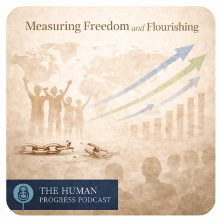

No Code Website BuilderHow is the world doing in terms of economic freedom and well-being? In this episode Valeria Giacomin, from Bocconi's Department of Social and Political Sciences, interviews Professor Leandro Prados de la Escosura from University Carlos III of Madrid.
Entrevista sobre el libro A Millennial View of Spain's Development: Essays in Economic History (Frontiers in Economic History)
La regulación excesiva frena la competencia y lastra España. La convergencia en PIB per cápita con la UE se revirtió a partir de 2001 y en 2019 habíamos retrocedido al nivel de 1975.
Entrevista a Leandro Prados de la Escosura
Well‐being dimensions may reveal diverging trends, warranting the resort to a composite measure. CATO Institute Research Brief.
How has human development evolved during the last 150 years of globalization and economic growth? How has human development been distributed across countries? How do developing countries compare to developed countries? Human Development and the Path to Freedom: 1870 to the Present (Cambridge University Press, 2022) addresses these key questions in the context of modern economic growth and globalization from c.1870 to the present. Spotify podcast.
In the latest HEDG Hosts event, we were given a presentation by Leandro Prados-de-la-Escosura - Emeritus Professor of Economic History at Universidad Carlos III de Madrid. His research interests include freedom and well-being in historical perspective and Spain's economic development. His presentation focuses on the construction of a new human development index highlighting that there is more to development than just income. HEDG Youtube HEDG Host.
Today we meet with and discuss the recent work of Prof. Leandro Prados de la Escosura. We speak about the concept of economic liberty and discuss whether improvements in measures of health and education map on to GDP per capita over time.....it's not that simple. With new metrics developed by Leandro, we reconsider the standard narratives with examples from different periods where well-being and GDP per capita appear to diverge. Using his newly developed data, Leandro joins the economic inequality debate and considers whether global equity in well-being has followed a similar path to the distribution of income story. The Economic History Podcast.

Leandro Prados de la Escosura, an emeritus professor of economic history at Carlos III University in Spain, joins Chelsea Follett to discuss long term trends in wellbeing, inequality, and freedom. To see the slides that accompany the interview, watch the video on YouTube. The Human Progress Podcast.
En esta primera conferencia del ciclo “De frontera a imperio, de imperio a nación. Una historia económica de España", el catedrático emérito de Historia Económica Leandro Prados de la Escosura analiza la historia económica española desde el siglo XIII hasta comienzos del siglo XIX. En este periodo, el conferenciante diferencia dos fases: una primera (1277-1570) relativa a una economía de frontera, orientada al comercio, con núcleos urbanos importantes y caracterizada por una desigualdad baja y un crecimiento sostenido; y una segunda (1570-1820), que concluiría con la pérdida de las colonias americanas y tras el final de la guerra de la Independencia española, tendente al declive económico, orientada a la agricultura y caracterizada por una mayor desigualdad social, bajos salarios y pérdida progresiva de la productividad. Entre las causas del colapso a partir de 1570 se señalan el aumento de la presión fiscal y la inestabilidad monetaria, entre otras. Conferencia Fundación Juan March.
En la segunda y última conferencia del ciclo De frontera a imperio, de imperio a nación. Una historia económica de España, el catedrático emérito de Historia Económica Leandro Prados de la Escosura analiza el recorrido económico de España en los últimos doscientos años, enfatizando el crecimiento exponencial del bienestar material de la población y la productividad laboral. En este periodo, el conferenciante diferencia entre varios factores de crecimiento, como son las ganancias de eficiencia –a finales del siglo XIX, durante la década de 1920 y entre 1953 y 1986– y la intensificación del capital físico y humano, con especial énfasis desde 1986, cuando España ingresa en la Unión Europea. La exposición a la competencia internacional se presenta como un elemento decisivo de los resultados del crecimiento. Conferencia Fundación Juan March.
Leandro Prados de la Escosura, catedrático de Economía en la Universidad Carlos III de Madrid, ofrece esta conferencia presentada por Francisco Cabrillo, secretario general de la Fundación Civismo, para poner en común cuestiones sobre la economía española respecto a la europea. Conferencia Fundación Civismo.
Economic liberty implies the absence of coercion and interference in the actions of economic agents. The evolution of economic freedom and its dimensions have only occasionally been explored. This column offers new estimates spanning 1850–2020 for 21 OECD countries, revising previous estimates. Long-run gains in economic freedom over the last 170 years were interrupted by the two World Wars. Economic freedom peaked by 2000 and has declined in the early 21st century. International openness has been the main driver of economic freedom over time, especially from 1950 onwards. CEPR Vox column.
We measure inequality using income as a proxy for welfare. But are we mixing up "doing well" with "being well"? Leandro Prados de la Escosura thinks so, and his research contradicts much of what we think we know about the long-run trends in inequality. CEPR Vox Talks.
How has human development evolved during the last 150 years of globalization and economic growth? How has human development been distributed across countries? How do developing countries compare to developed countries? Do social systems matter for well-being? Are there differences in the performance of developing regions over time? This podcast addresses these key questions in the context of modern economic growth and globalization from c.1870 to the present.
The relationship between a country’s economic conditions and the subjective well-being of its citizens has attracted increasing interest from economists in recent decades, but the question is rarely pursued in a historical context. This column looks back to early modern Spain, which experienced an economic decline from the 1570s to 1650, to assess how that decline affected individual perceptions of well-being and inequality. CEPR Vox column.
GDP per capita is a commonly used, but imperfect, proxy for human wellbeing. This column analyses the relationship between life expectancy at birth and per capita income over the past 150 years. It shows that life expectancy and per capita income growth behaved differently in terms of trends and distribution over the period. The relationship was particularly weak during the period 1914 to 1950. Separately, medical improvements and the diffusion of medical knowledge have been crucial drivers of life expectancy improvements across the world. CEPR Vox column.
For many European countries, the aftermath of the Black Death in the fourteenth century saw an increase in average income and a reduction in income inequality. As labour became more scarce, the bargaining power of workers rose and so did their wages. But this was not the case in Spain. This column investigates why Spain fared so differently to its neighbours. Their findings suggest that the economic effects of a pandemic depend a great deal on the economic conditions of a country before the pandemic began. CAGE Research Centre blog.
The current productivity slowdown in advanced economies has triggered a lively debate about its causes and remedies. This column takes a long-run perspective to study drivers of productivity expansion and stagnation in Spain during the last 170 years. It finds that the productivity slowdown coincided with resource reallocation towards sectors attracting less innovation, with low investment in intangibles and low investment-specific technical change. Obstacles to competition in product and factor markets, subsidies, and cronyism further contributed to capital misallocation, negatively affecting productivity growth. CEPR Vox column.
It is believed that living standards in world economies stayed roughly constant prior to 1800. This column presents data on Spanish population and economic development from 1277-1850 which challenges this view. Population and economic growth are found to evolve simultaneously, contradicting the Malthusian view. Spain was a frontier economy within Europe that, after a drop in living standards after the Black Death, grew steadily until the 1570s, when its path diverged from the rest of Europe. CEPR Vox column.
This column analyses wellbeing which is widely seen as a multi-dimensional phenomenon affected not only by material goods, but also health, education, agency and freedom, environment, and security. Among the multidimensional approaches to well-being human development has been defined as “a process of enlarging people’s choices”. EHES Positive Check Blog.
The concept of human development views wellbeing as being affected by a wide range of factors including health and education. This column examines worldwide long-term wellbeing from 1870-2015 with an augmented historical human development index (AHHDI) that combines new measures of achievements in health, education, material living standards, and political freedom. It shows that world human development has steadily improved over time, although advances have been unevenly distributed across world regions. CEPR Vox column.
Rising trends in GDP per capita are often interpreted as reflecting rising levels of general wellbeing. But GDP per capita is at best a crude proxy for wellbeing, neglecting important qualitative dimensions. This column explores the long-term trends in global wellbeing inequality using a new dataset. Inequality indices reflecting various aspects of wellbeing are shown to have been declining since WWI, unlike real GDP per capita inequality. CEPR Vox column.
In the last one and a half centuries, substantial gains are observed for well-being dimensions beyond per capita GDP (including health, education, political voice, civil liberties, and personal security). How have these gains been distributed? Do inequality trends in well-being dimensions concur? This column tries to answer these questions presenting a long-run view of well-being inequality at world scale based on a new historical dataset. EHES Positive Check Blog.
The Napoleonic Wars (1793-1815) are usually depicted as a major juncture in European history. Historians’ assessments of the Peninsular War (1808-1814) tend to emphasise its negative short-term impact. This column surveys the short- and long-run effects of war. EHES Positive Check Blog.
A new set of historical national accounts for Spain constructs estimates of output and expenditure from 1850 onwards. This column argues that the data demonstrates that GDP per capita captures long-run trends in welfare in Spain, but not short and medium run trends. CEPR Vox column.
Indices of economic freedom refer mostly to the recent past, making policy prescriptions difficult to draw. This column presents a new historical index of economic liberty covering 21 OECD countries for the period 1850-2007. Over time, progress in economic liberty has derived from different factors, but improvements in legal structures and property rights emerge as the main forces behind the long-term gains.
Human development provides a long-run view of well-being. This column presents a new historical index of human development covering 157 countries from the mid-19th century. The index gives a comprehensive view on human development on the global scale, and stresses the health and knowledge dimensions of well-being. CEPR Vox column.
How does Latin American well-being compare to the advanced nations? This column presents a new historical index of human development that allows for analyses of trends in Latin American development since 1870. The results unearth a number of puzzles that pit rising income against flagging developments in well-being. CEPR Vox column.
As demonstrated by the dramatic upward revision of Nigeria’s GDP for 2013, the choice of a benchmark year matters when computing GDP statistics. This column explains how the replacement of benchmark years creates an inconsistency between new and old national accounts series, and how different ways of resolving this inconsistency yield very different estimates of historical GDP levels and growth rates. When used to evaluate the relative historical performance of Spain and France, the interpolation procedure for splicing national accounts produces more plausible results than the conventional ‘retropolation’ approach.
Measures of economic freedom provide useful cross-country comparisons, but lack the time dimension to track intertemporal progress. This column presents a new measure and extends it back in time to tell a history of economic freedom over the course of the twentieth century. CEPR Vox column.
No Code Website Builder